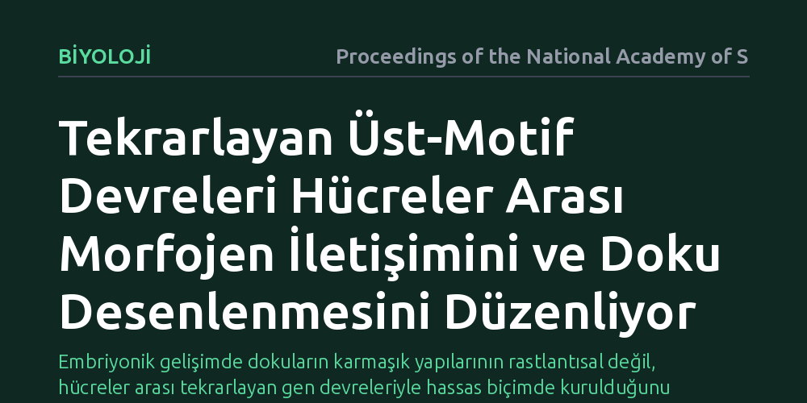

BIYOLOJI · Proceedings of the National Academy of Sciences · 2026-10-20
Çalışma, hücrelerin doku oluşumu sırasında morfojen sinyallerini nasıl algılayıp yeniden ürettiğini inceleyerek bu iletişimi yöneten düzenleyici mantığı araştırıyor. Araştırmacılar, farklı hücre tipleri arasındaki morfojen tepkisi ile üretimini tekrarlayan üst-motif ağ devrelerinin koordine ettiğini ortaya koyuyor.
Embriyonik gelişimde dokuların karmaşık yapılarının rastlantısal değil, hücreler arası tekrarlayan gen devreleriyle hassas biçimde kurulduğunu gösteriyor.

Gelişmekte olan bir canlıda hücrelerin doğru zamanda doğru organı veya dokuyu oluşturabilmesi biyolojinin en temel sorularından biridir. Bu süreç, morfojen adı verilen özel sinyal moleküllerinin doku boyunca oluşturduğu yoğunluk farkları sayesinde yönetilir. Hücreler, çevrelerindeki morfojen yoğunluğunu algılayarak hangi genleri çalıştıracaklarına ve ne tür bir hücreye dönüşeceklerine karar verir.
Ancak bu süreç tek yönlü bir algılamadan ibaret değildir; hücreler yalnızca morfojenleri algılamakla kalmaz, aynı zamanda kendileri de yeni sinyal molekülleri üretip çevrelerine salgılar. Farklı hücre tiplerinin bu gelen sinyallere nasıl tepki verdiği ve bunu yeni sinyal üretimine hangi kural setleriyle bağladığı uzun süredir tam olarak açıklanamayan bir boşluk olarak duruyordu.
Araştırmacılar, bu karmaşık iletişimi çözmek için deneysel verilerle hesaplamalı gen düzenleyici ağ modellerini bir araya getiren kuramsal bir çerçeve kurdu. Geleneksel yaklaşımlar genellikle tekil gen etkileşimlerine odaklanırken, bu çalışmada hücreler arası çok katmanlı geribildirimleri içeren üst-motif devre mimarileri modellendi.
Geliştirilen matematiksel simülasyonlar, farklı sinyal derişimleri altında hücre içi gen düzenleme ağlarının nasıl tepki verdiğini ve bu tepkilerin çevre dokulardaki diğer hücrelere nasıl aktarıldığını sistematik olarak test etti. Bu sayede doku boyunca yayılan kimyasal desenlerin hangi devre tasarımlarıyla kararlı kılındığı incelendi.
Elde edilen bulgular, hücrelerin morfojen sinyallerini rastgele doğrusal yollarla değil, tekrarlayan üst-motif devreleri aracılığıyla işlediğini ortaya koyuyor. Bu devreler, hücrenin aldığı dış sinyale göre kendi morfojen üretimini hassas bir şekilde ayarlayan geribildirim ve ileri besleme döngülerinden oluşuyor.
Bu özel devre mimarisi, biyolojik sistemlerin maruz kaldığı gürültüyü ve dalgalanmaları filtreleyerek doku sınırlarının son derece keskin ve hatasız biçimde çizilmesini sağlıyor. Böylece farklılaşan hücre grupları, çevrelerinden gelen karmaşık kimyasal ortamda bile kararlı kimliklerini koruyabiliyor.
Morfojen sinyal iletimini yöneten devre mantığının çözülmesi, organ gelişimi ve rejeneratif tıp açısından önemli kapılar aralıyor. Kök hücrelerden laboratuvar ortamında doku ve organoid üretirken karşılaşılan en büyük zorluklardan biri, hücrelerin istenen desende düzenli bir şekilde örgütlenmesini sağlamaktır; bu devre mantığı, doku mühendisliği için kuramsal bir rehber sunuyor.
Öte yandan gelişimsel gen devrelerindeki bozulmalar, kontrolsüz hücre çoğalması ve kanser gibi birçok patolojik sürecin merkezinde yer alıyor. Hücreler arası sinyal ağlarının matematiksel kurallarını anlamak, bu iletişimin koptuğu hastalıklarda hedefe yönelik yeni müdahale stratejileri geliştirmeye katkıda bulunacaktır.